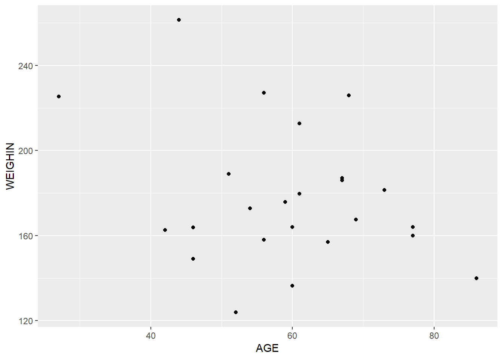

5 Visualization
Perhaps R’s single greatest advantage over other software packages is its ability to produce publication-ready figures quickly. Although there are multiple approaches to doing so, by far the most popular is to use ggplot2, which is a sub-package of the tidyverse.
5.1 Overview
The “gg” in ggplot stands for “Grammar of Graphics” and is a key concept for understanding how ggplot works. In short, the designers of this package argue that making any 2D figure (and maybe 3D ones too!) involves a set of rules - a “grammar” - that describes how to go from the data to the picture. In what follows, we’ll build up that grammmar and see how we can add “words” (figure elements, like points and color) to a basic plot to make it more complex.
We start by importing a basic cancer dataset. Note that in this case, we are importing a .sav file from SPSS, so we need to use the haven::read_spss() function, instead of read_abcd() or read_csv().
library(tidyverse)
my_data <- haven::read_spss('data/cancer.sav')5.2 ggplot Mappings
The first step to producing a plot is to call the ggplot() function, which takes two arguments: the dataset that you want to plot from and a mapping. The first argument is obvious, but what is a mapping? In short, it is a set of instructions for how ggplot should turn columns of your dataset into features of your plot. In our case, we just tell it that we want the AGE variable to represent our x-axis and WEIGHIN to represent our y-axis.
We save the result to an object p (for “plot”), which we will add pieces to as we go. To see how our plot looks for far, we just call it on a line all by itself.
p <- ggplot(data = my_data, mapping = aes(x = AGE, y = WEIGHIN))
pSo far, it doesn’t look like much, but that’s because all we’ve done is specify our data an our axes. Still, we can see that we’ve made some progress. The x-axes looks to include some age-like numbers from 20 - 80. Likewise, the y-axis looks like it includes some weight-like numbers, from 120 - 250. We got at least that right.
5.3 Adding geoms to the plot
Now we need to add some geoms (“geometric objects,” like points) to our plot.
p + geom_point()
Our plot now has some real content to it. We can easily see the (weakly positive) relationship between age and weight, represented by these points. There are many other geoms you can add, some of which will make more and less sense.
For example, we can connect adjacent points in the dataset with geom_line(). This would make a lot of sense for longitudinal data, but makes less sense here.
p +
geom_point() +
geom_line()A more appropriate geom to add might be geom_smooth(), which will give us a smoothed line intended to summarize the relationship between our X and Y axes.
p +
geom_point() +
geom_smooth()## `geom_smooth()` using method = 'loess' and formula 'y ~ x'
To give some quick examples, here are some other geoms that could be applied even to this relatively small dataset. Note that depending on the geom, which might need to specify our aesthetic mappings differently.
ggplot(my_data, aes(x = STAGE)) +
geom_bar()
ggplot(my_data, aes(x = STAGE, y = AGE, group = STAGE)) +
geom_boxplot()ggplot(my_data, aes(x = WEIGHIN)) +
geom_density()5.4 Geom Options and Mappings
At this point, it is important to mention that all geoms have a variety of options you can apply to them. For example, if I want to increase or decrease my points, I can change the size of them, like so. At the same time, I could also change their color.
p +
geom_point(size = 5, color = 'blue')But the real power of ggplot comes from the fact that you can force your geoms to react to your data by feeding them their own mapping (see earlier section for description of what mapppings are). For example, I might want the size of all points to remain large, but have the color of the points change by the stage of cancer the patient is in. To achieve that, I feed the STAGE variable to the mapping argument of geom_point(), like so.
p +
geom_point(
mapping = aes(color = factor(STAGE)),
size = 5)Conveniently, whenever you feed a mapping to a geom (i.e., tell ggplot to react to a feature of your dataset), it will automatically create a legend for you.
5.5 Saving plots
Once you are satisfied with your plot, you can save it with the convenient ggsave() function. This function will guess which kind of image you want to save (e.g., .png, .jpg), based on the output file name you give it.
ggsave(filename = 'my_plot.png', plot = p)## Saving 7 x 5 in image5.6 Other features to look for
The ggplot2 package is a large collection of functions, that is designed to be as flexible as possible. For this reason, there are too many of them to cover in just one introductory chapter. However, the documentation on ggplot - which you can again reach with the ? operator - is rich and should help you continually expand you ggplot skills. To highlight the kind of options you might want to investigate for creating a publication-ready figure, we leave the example below. This example shows a few things (e.g., changing themes, adding a line of best fit, colored dots forced to grey scale), including how few lines of code can produce a high quality figure.
ggplot(data = my_data, mapping = aes(x = AGE, y = WEIGHIN)) +
geom_point(
mapping = aes(color = factor(STAGE)),
size = 5) +
geom_smooth(method = 'lm', se = F, color = 'black', linetype = 2) +
scale_color_grey() +
theme_bw() +
labs(
x = 'Age at baseline',
y = 'Weight at baseline',
color = 'Cancer stage')## `geom_smooth()` using formula 'y ~ x'